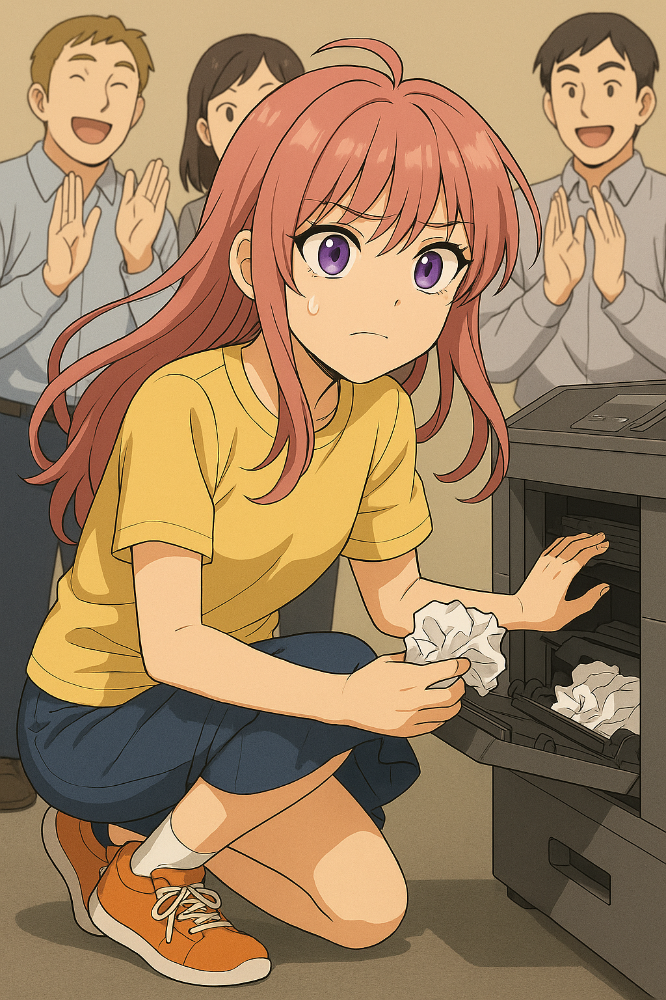
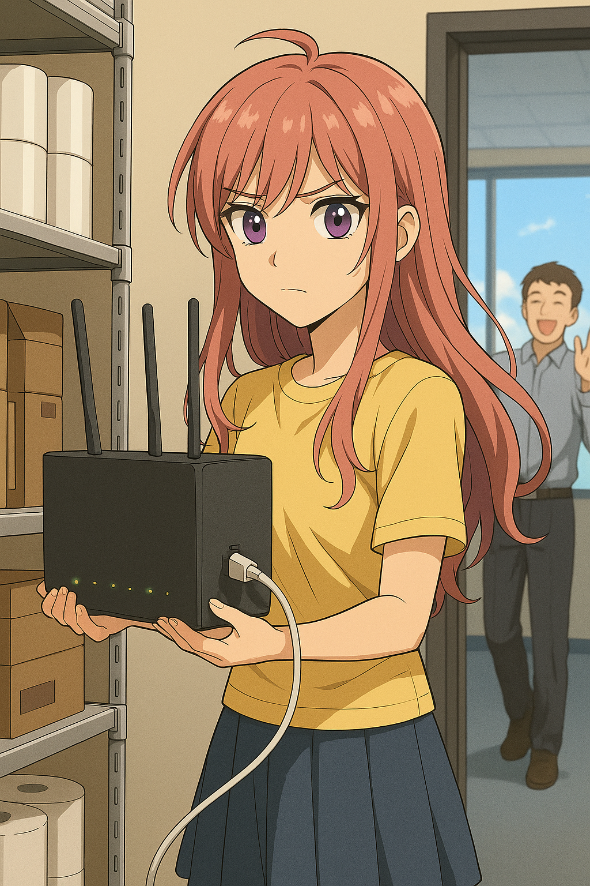
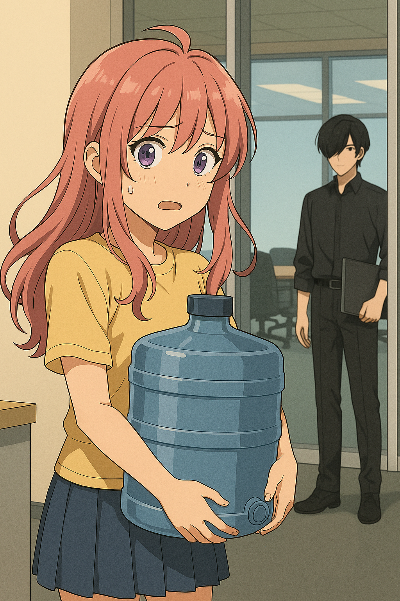
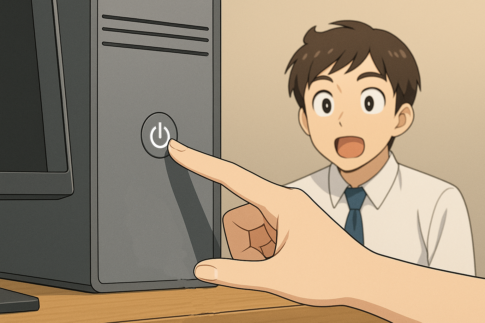

【正文】
01｜打印机大作战
肖笑笑刚在文印区的小圆桌坐稳，咖啡还没喝上一口，就被一位同事风风火火地拦住：
“哎，新来的 IT 外包吧？打印机又卡纸啦，拜托你帮忙看看——”
她走过去，只见打印机的进纸口里蜷着一张纸，弯得像寄生兽打结的触手。
OS：打印机，是全 IT 人员的职业天敌。绝不夸张。
她撸起袖子，蹲下、打开舱盖、夹纸、清理碎屑，一边默念《维护之心要诀》。
十分钟后，终于抽出一团皱得像冷宫信纸的纸球，顺手拍了两下机身面板：
滴—— 打印恢复。
那一刻，周围的同事们爆发出掌声，仿佛她刚拿下拳王金腰带。
OS：……可惜，这不是加班费，是鼓励奖。

02｜Wi-Fi失联求生记
正准备回位子，另一个同事拉住她：
「欸，你知道网络为什么连不上吗？我微信都发不出去……」
笑笑掏出笔记本确认 IP：
OS：啊这，是整个楼的 Wi-Fi挂了？
她走到茶水间后门的弱电间，推开一堆纸巾和咖啡滤纸，看到那台路由器：
“绿灯常亮，红灯狂闪。”
她熟练地拔电、重插。
两分钟后，同事惊喜地喊：
「哦哦！网回来了！」

03｜外包 IT = 换水员？
刚坐回小圆桌端起咖啡，三位行政同事之一的小姐姐探头进来：
“新来的外包，饮水机的桶没水啦，你能帮忙换下吗？”
笑笑愣了一下：
OS：我是 IT，不是 H₂O 工程师啊喂！
她抱起水桶，颤巍巍搬上去，刚放下，正好和会议室走出来的“神秘男”四目相对……
OS：好耻……要是他以为我是饮水机换水外包怎么办？

04｜“修电脑”的正确方式？
回到座位不到五分钟，又有人走来：
「新来的？我电脑好像死机了，一直卡在 Excel 画图那里……」
笑笑走过去，按了下电源键长按重启。
电脑秒开。
「哇，太厉害了！你怎么做到的？」
OS：我：知道关机按钮在哪。
